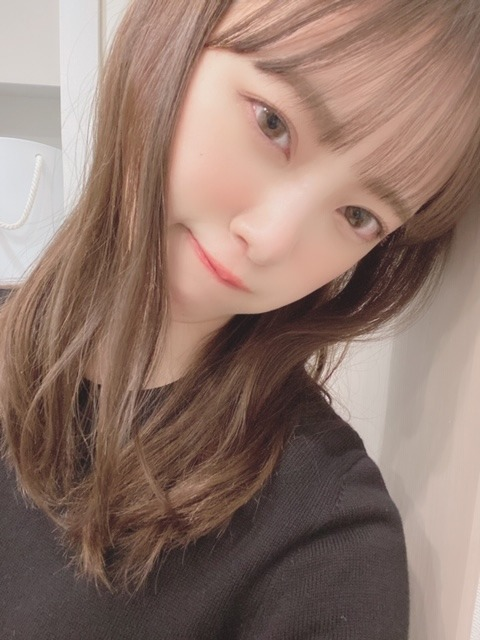
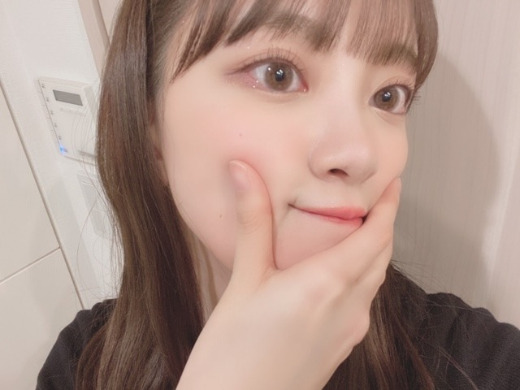
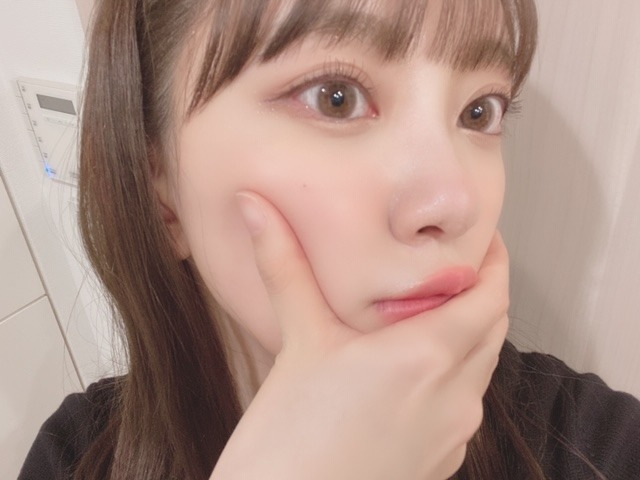
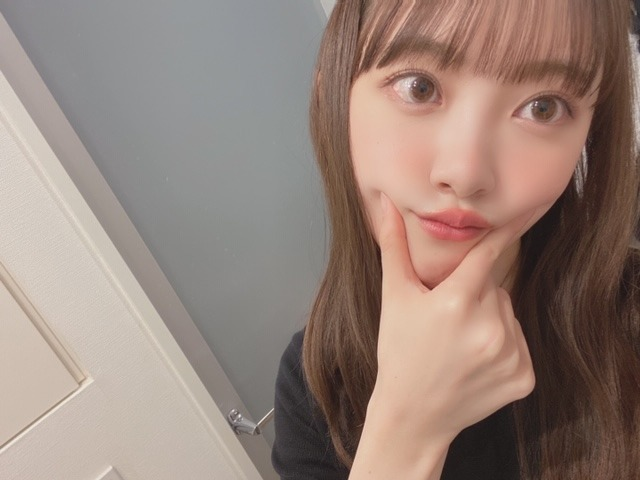
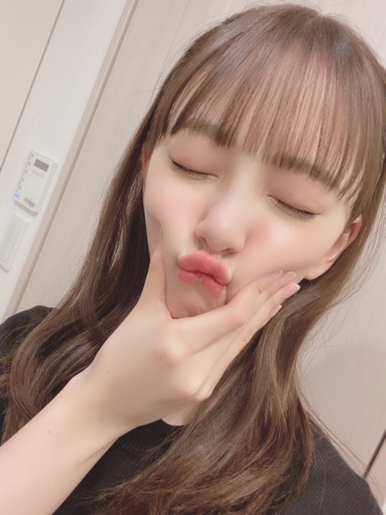
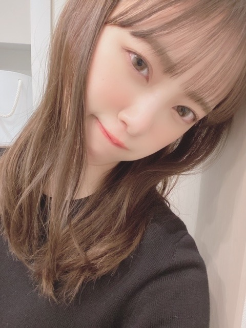
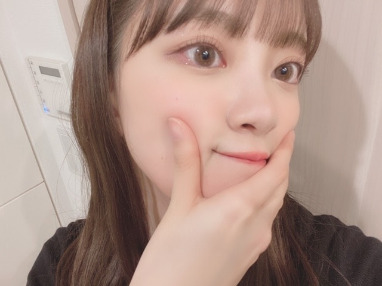
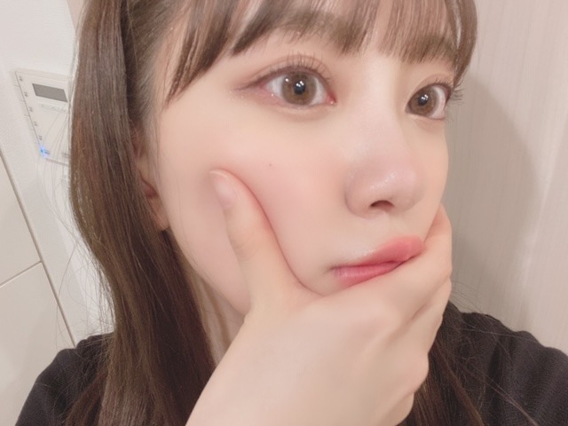
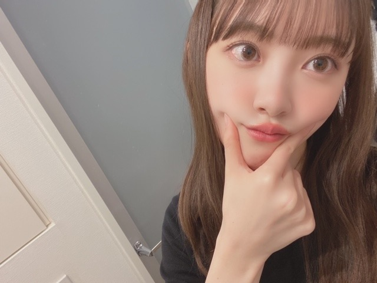
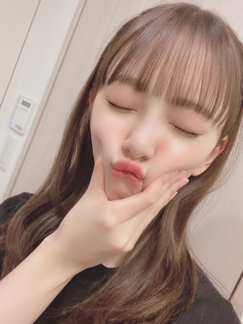

2020/0301Sun青カビタイプ
こんにちは〜
うちでは犬を2匹飼っていますがわたしは猫顔です。
でもうちの犬に似てるってよく言われます。
特にニコル。ニコルは写真フォルダの"ネコ"の一覧に振り分けられていました。
チワワなんですけどね。
だからまあニコル=チワワ=猫=私ということで！
純奈には、今の顔ニコルやんって頻繁に言われます。
似てるみたい。
そうそうこの間
真夏さん、りんごさん、みなみ、まあや、さくらちゃん、かずみさんと空き時間にパージっていう映画を観ました☺︎
私が個人的に観たくて楽屋で観ていたら人が集まってきて気づいたらみんなでワーワー言いながら観賞会してました。笑
いや〜面白かった〜！！
メンバーといると大家族みたいで楽しいです☺︎
あとはおうちで
MEGザモンスター
IT 最新章
を最近は観ました！
何回観てもMEGザモンスターのジェイソンステイサムが男前なんですよね。命をかけて人を守り助けられる人って素敵。
私も強い女性になりたい...

髪色明るくなってきた！
暗くしよーと。
あ、ちなみにどんなが髪色が見たいですか？
やったことない髪色にもしてみたいなぁ

そして最近またほっぺたがぷにぷにしてきたので
野菜中心生活を心がけようと思います。
スムージーも作ろう！
あとダンスの自主練も始めたのでたくさん汗をかいて痩せつつダンススキルをも、あげたいと思います☺︎

早くアナスターシャのMVを観てほしいな。曲も聞いてほしいしパフォーマンスも観てほしいです。
大好きな2期生が詰まっていて特別なものになりました。
では。
こんにちは〜
うちでは犬を2匹飼っていますがわたしは猫顔です。
でもうちの犬に似てるってよく言われます。
特にニコル。ニコルは写真フォルダの"ネコ"の一覧に振り分けられていました。
チワワなんですけどね。
だからまあニコル=チワワ=猫=私ということで！
純奈には、今の顔ニコルやんって頻繁に言われます。
似てるみたい。
そうそうこの間
真夏さん、りんごさん、みなみ、まあや、さくらちゃん、かずみさんと空き時間にパージっていう映画を観ました☺︎
私が個人的に観たくて楽屋で観ていたら人が集まってきて気づいたらみんなでワーワー言いながら観賞会してました。笑
いや〜面白かった〜！！
メンバーといると大家族みたいで楽しいです☺︎
あとはおうちで
MEGザモンスター
IT 最新章
を最近は観ました！
何回観てもMEGザモンスターのジェイソンステイサムが男前なんですよね。命をかけて人を守り助けられる人って素敵。
私も強い女性になりたい...

髪色明るくなってきた！
暗くしよーと。
あ、ちなみにどんなが髪色が見たいですか？
やったことない髪色にもしてみたいなぁ

そして最近またほっぺたがぷにぷにしてきたので
野菜中心生活を心がけようと思います。
スムージーも作ろう！
あとダンスの自主練も始めたのでたくさん汗をかいて痩せつつダンススキルをも、あげたいと思います☺︎

早くアナスターシャのMVを観てほしいな。曲も聞いてほしいしパフォーマンスも観てほしいです。
大好きな2期生が詰まっていて特別なものになりました。
では。
2020/03/01 12:16
コメント(361)
こんにちは。ブログ更新ありがとうございます。
ペットは飼い主に似るとか、アイドルは推しに似るとかって結構あるあるですよね。不思議です。
乃木坂シネマズ見ましたよー。結構激しめでしたね。そして迫力満点でかっこよかったでした。未央奈ちゃんもアクション女優いけますね。演技の稽古は大変そうですが、完成品を見る喜びもひとしおだと思います。
私も食べ物には気を付けています。意外と難しいのがタンパク質の取り方ですね。運動した後30分以内に採ると良いと聞いたので、粉末のプロテインを買って飲んでいます。
ではまた。
ペットは飼い主に似るとか、アイドルは推しに似るとかって結構あるあるですよね。不思議です。
乃木坂シネマズ見ましたよー。結構激しめでしたね。そして迫力満点でかっこよかったでした。未央奈ちゃんもアクション女優いけますね。演技の稽古は大変そうですが、完成品を見る喜びもひとしおだと思います。
私も食べ物には気を付けています。意外と難しいのがタンパク質の取り方ですね。運動した後30分以内に採ると良いと聞いたので、粉末のプロテインを買って飲んでいます。
ではまた。
グレーアッシュみたいなカラーも見てみたい！
たくさん自撮りありがとう嬉しい (＞＜)♡
たくさん自撮りありがとう嬉しい (＞＜)♡
個人的にはポニーテールとかも見ていたいです...。
ブログ更新ありがとう⸜❤︎⸝
めっちゃ可愛い〜⸜❤︎⸝大好きだよ⸜❤︎⸝
MV楽しみ〜⸜❤︎⸝
めっちゃ可愛い〜⸜❤︎⸝大好きだよ⸜❤︎⸝
MV楽しみ〜⸜❤︎⸝
みおたんきゃわたん♡♡♡
ゴルゴ～～ンゾウ～～ラ～～！！！！
って、必殺技っぽく叫んでみたい…。
って、必殺技っぽく叫んでみたい…。
「スカイスクレイパー」本当にオススメします！！！
ぜひ見てください笑
では。
ぜひ見てください笑
では。
ブ～ン、飛んできたよっ 
未央奈先生、自己管理立派です。
しっかり食べて体動かして『次』に備えてください。
あっ、写真集楽しみです。
see you！ (^^)/
未央奈先生、自己管理立派です。
しっかり食べて体動かして『次』に備えてください。
あっ、写真集楽しみです。
see you！ (^^)/
あのほんとに尊過ぎます
未央奈ちゃん＼(^o^)／お疲れ様でした
いやー、ニコルちゃんに似てること多分皆が知ってるよ、そして皆が納得するよ＼(^o^)／（笑）
メンバー皆との映画会は楽しそう(｡>﹏<｡)
これからも頑張って(/･ω･)/
ああ、相変わらず可愛い自撮りだな(*´ω｀*)♡♡♡写真ありがとう
ダイエットやダンス頑張って(/･ω･)/
いやー、ニコルちゃんに似てること多分皆が知ってるよ、そして皆が納得するよ＼(^o^)／（笑）
メンバー皆との映画会は楽しそう(｡>﹏<｡)
これからも頑張って(/･ω･)/
ああ、相変わらず可愛い自撮りだな(*´ω｀*)♡♡♡写真ありがとう
ダイエットやダンス頑張って(/･ω･)/
未央奈ちゃん！ブログ更新ありがとう！最近沢山更新してて嬉しい！！
バースデーライブ1日目しか参戦出来なかったけど最高でした！！
まだブログ更新待ってる！！
バースデーライブ1日目しか参戦出来なかったけど最高でした！！
まだブログ更新待ってる！！
質問
写真撮ってる場所て、もしかして脱水場！？
写真撮ってる場所て、もしかして脱水場！？
にゃんにゃん
未央奈
猫顔の未央奈も
犬顔の未央奈も
大好きという結論が出ました
またコメントするね
SONYでした
猫顔の未央奈も
犬顔の未央奈も
大好きという結論が出ました
またコメントするね
SONYでした
みおなしゅき〜
グレーアッシュかオリーブアッシュにしてみてほしいです！
可愛すぎ！
堀ちゃんの金髪は衝撃的だったー！！
あの時は本当に金髪にしたんだって思って、あせったー
金髪の堀ちゃんする時は予告してね。。笑
あの時は本当に金髪にしたんだって思って、あせったー
金髪の堀ちゃんする時は予告してね。。笑
へい未央奈(•ө•)
・パージ？大統領令から観たから、意味がわかんなくて、途中で観なくなった覚えが。笑
007の最新作も、ダニエル・グレイグ版は一つも観てないが、予告がかっこよかったから、最新作を見てみようかと。笑
・野菜は無添加のトマトジュースを飲んでるから良いかなとーカルシウムは熊本のらくのう牛乳•̀.̫•́✧
因みにパワーブリーズの青(標準)をmaxまであげたから、パワーブリーズの赤(重量？)を購入したよー
『ほりっぴー無理するなよーどうせ長続きしないんだからてへっ飛鳥ちゃんだよ(•ө•)♡』って飛鳥に言われるぞ。笑
・レイの瞳も子犬みたいで、大人心がくすぐられるんだがー同じ思いの同士を探したい。笑
というわけで、 "野生の呼び声"を観てきたよ(^^)ハリソン・フォードが主演。というよりは、主にハリソンは語り手の位置で..南国で温々育った犬(バック)が、極寒の地や未開の地での冒険や愛を通じて、動物としての野生の本能が開花し成長していくサクセスストーリーかな。
ストーリー的にはありきたりかも知れないが、音楽の壮大さや自然の美観もこの映画の注目点で、なにより成長していくうえで大切な事をこのバックとともに学べるのがこの作品の良さかと。
・がんば未央奈ー
・パージ？大統領令から観たから、意味がわかんなくて、途中で観なくなった覚えが。笑
007の最新作も、ダニエル・グレイグ版は一つも観てないが、予告がかっこよかったから、最新作を見てみようかと。笑
・野菜は無添加のトマトジュースを飲んでるから良いかなとーカルシウムは熊本のらくのう牛乳•̀.̫•́✧
因みにパワーブリーズの青(標準)をmaxまであげたから、パワーブリーズの赤(重量？)を購入したよー
『ほりっぴー無理するなよーどうせ長続きしないんだからてへっ飛鳥ちゃんだよ(•ө•)♡』って飛鳥に言われるぞ。笑
・レイの瞳も子犬みたいで、大人心がくすぐられるんだがー同じ思いの同士を探したい。笑
というわけで、 "野生の呼び声"を観てきたよ(^^)ハリソン・フォードが主演。というよりは、主にハリソンは語り手の位置で..南国で温々育った犬(バック)が、極寒の地や未開の地での冒険や愛を通じて、動物としての野生の本能が開花し成長していくサクセスストーリーかな。
ストーリー的にはありきたりかも知れないが、音楽の壮大さや自然の美観もこの映画の注目点で、なにより成長していくうえで大切な事をこのバックとともに学べるのがこの作品の良さかと。
・がんば未央奈ー
たぶんほりさんのお目が猫アイズみたいだから猫顔に言われたですかね。
ジブリの猫の恩返しの猫王国に猫姫でもなれるそうです。
猫王国は王子だけですけどね。
ジブリの猫の恩返しの猫王国に猫姫でもなれるそうです。
猫王国は王子だけですけどね。
更新ありがとうございます！！
ぷにぷにかわぃー！
金髪みてみたいです！！
ぷにぷにかわぃー！
金髪みてみたいです！！
堀未央奈さん。こんばんは。
アナスターシャ！MV観たいです。テレビの歌番組でも観たい。楽しみです。
未央奈さんのほっぺプニプニ好きです。
未央奈さん。尊敬してます。大好きです。応援してます。
髪型はポニーテールが好きです。
0606より
アナスターシャ！MV観たいです。テレビの歌番組でも観たい。楽しみです。
未央奈さんのほっぺプニプニ好きです。
未央奈さん。尊敬してます。大好きです。応援してます。
髪型はポニーテールが好きです。
0606より
モカベージュとかモカ系が似合いそうトーンは暗くなりつつもモカ系で重くなりすぎず、、未央奈ちゃん何色でも似合う！
ブログ更新ありがとう！
久しぶりに黒髪ボブが見てみたい！
久しぶりに黒髪ボブが見てみたい！
ペットは飼い主に似るって言うよね～
第一印象がそうだからかもしれないけど、未央奈の髪色といえば黒ってイメージあるな～
明るい色も似合ってるけどね。
ほっぺぷに未央奈も可愛いぞ(笑)
アナスターシャ楽しみにしてます。
では✋
第一印象がそうだからかもしれないけど、未央奈の髪色といえば黒ってイメージあるな～
明るい色も似合ってるけどね。
ほっぺぷに未央奈も可愛いぞ(笑)
アナスターシャ楽しみにしてます。
では✋
好きな髪型はポニーテールかショートボブ系が好きですねー。
更新ありがとう。
僕も白いチワワ飼ってるんですけどカメラで写真撮るとき犬じゃなくて猫のマークがでます。チワワって猫顔なんですかね。
未央奈ちゃんのいろんな表情の写真かわいい
髪色未央奈ちゃんがする色だったらなんでも似合うと思うよ。
ダンス無理しないで頑張ってね。
僕も白いチワワ飼ってるんですけどカメラで写真撮るとき犬じゃなくて猫のマークがでます。チワワって猫顔なんですかね。
未央奈ちゃんのいろんな表情の写真かわいい
髪色未央奈ちゃんがする色だったらなんでも似合うと思うよ。
ダンス無理しないで頑張ってね。
ペットは飼い主に似るって言いますが、本当
みたいだね！笑
また痩せるの？これ以上痩せちゃうと骨だけに
なっちゃうよ～
今の体型がいいよ！
見てみたい髪色か～？
シルバーか？赤だな！金髪も見てみたい
みたいだね！笑
また痩せるの？これ以上痩せちゃうと骨だけに
なっちゃうよ～
今の体型がいいよ！
見てみたい髪色か～？
シルバーか？赤だな！金髪も見てみたい
未央奈ちゃんブログ更新ありがとう！2期生の楽曲「アナスターシャ」MVも気になる。MVチェックしますよ！
未央奈さ〜ん！こんばんはぁ。
ブログ更新ありがとうございます！早く新曲のMVがみたいです！
ブログ更新ありがとうございます！早く新曲のMVがみたいです！
未央奈ちゃんブログ更新ありがとう！
かわいいいいいいいいっ
ニコルとプティの画像モバメで送ってくれたりして
可愛くて癒されるんだ〜！
ほっぺたむにってするポーズもすき！！
おめめ綺麗〜
明るめも好きだし、暗めも好きだし、、、
だいすき！
かわいいいいいいいいっ
ニコルとプティの画像モバメで送ってくれたりして
可愛くて癒されるんだ〜！
ほっぺたむにってするポーズもすき！！
おめめ綺麗〜
明るめも好きだし、暗めも好きだし、、、
だいすき！
ブログ更新、ありがとー！
ドラマのアクションシーン、
敵がヒロインのアクションを待つことがなく、
すごく臨場感があって、スピード感もあって、
観ていてすごく良かった！
成田初の危うさにも似た繊細さ、
凛子のキレのあるアクション、
次が今から楽しみ！
ドラマのアクションシーン、
敵がヒロインのアクションを待つことがなく、
すごく臨場感があって、スピード感もあって、
観ていてすごく良かった！
成田初の危うさにも似た繊細さ、
凛子のキレのあるアクション、
次が今から楽しみ！
やったことない髪色…メッシュとかは、乃木坂的にはNGですかね？
見てみたいですけど☆
見てみたいですけど☆
未央奈ちゃん！
ブログ更新ありがとう!
どんな髪型でもかわいい!
最近、堀北コンビの会話も面白いと思っています。２期生ライブ残念だったけど、この期間充電して、また迫力満点のライブを見たいです!
応援してるよ☺️☺️
ブログ更新ありがとう!
どんな髪型でもかわいい!
最近、堀北コンビの会話も面白いと思っています。２期生ライブ残念だったけど、この期間充電して、また迫力満点のライブを見たいです!
応援してるよ☺️☺️
未央奈ちゃんこんにちは。
遅くなっちゃったけど、4日間200曲にも及ぶバスラお疲れさまでした。そして昨日のTGCも異様な雰囲気の中でだったと思いますが、お疲れさまでした。
そして2期生ライブの中止についても、何とも言いようのない苦しい胸の内をモバメでも読ませていただきました。正直軽々しく「心中お察しします」なんて言えませんね。ほんと掛ける言葉が見当たらないってのが本音です。
でも、僕らが落ち込んでいても状況が好転するわけじゃないから、今はただただ未央奈ちゃんを応援し続けるのみです！
ちょっと話が重くなっちゃいましたね・・・。
では、すっかり話題を変えて、僕は白く透き通った肌を持つ未央奈ちゃんにはやっぱり黒髪或いは暗めの茶系が一番似合うんじゃないかって思ってます。もちろん明るめの髪色になっても可愛いのは変わらないんだけどね。
では、またの更新楽しみにしています。
遅くなっちゃったけど、4日間200曲にも及ぶバスラお疲れさまでした。そして昨日のTGCも異様な雰囲気の中でだったと思いますが、お疲れさまでした。
そして2期生ライブの中止についても、何とも言いようのない苦しい胸の内をモバメでも読ませていただきました。正直軽々しく「心中お察しします」なんて言えませんね。ほんと掛ける言葉が見当たらないってのが本音です。
でも、僕らが落ち込んでいても状況が好転するわけじゃないから、今はただただ未央奈ちゃんを応援し続けるのみです！
ちょっと話が重くなっちゃいましたね・・・。
では、すっかり話題を変えて、僕は白く透き通った肌を持つ未央奈ちゃんにはやっぱり黒髪或いは暗めの茶系が一番似合うんじゃないかって思ってます。もちろん明るめの髪色になっても可愛いのは変わらないんだけどね。
では、またの更新楽しみにしています。
未央奈ちゃんこんばんは。
早くアナスターシャの歌も聞きたいし
MVも観たいですね。
楽しみです。
早くアナスターシャの歌も聞きたいし
MVも観たいですね。
楽しみです。
仲良さそーで何よりです☺️
MV楽しみにしてるねー！！！
MV楽しみにしてるねー！！！
ほりちゃんショートで毛先カラー見てみたいです‼️
似合うと思う！
似合うと思う！
未央奈！！
ブログ更新ありがとう
今日は高校の卒業式だったよ〜笑笑
猫かわいい！
うちは犬飼ってる笑笑
次のブログも待ってるね〜
ブログ更新ありがとう
今日は高校の卒業式だったよ〜笑笑
猫かわいい！
うちは犬飼ってる笑笑
次のブログも待ってるね〜
未央奈ちゃんこんばんは！ありがとうございます‼頑張ります‼頑張って下さい！ありがとうございます！頑張ります‼頑張って下さい！
こんばんは！
犬と言っても、ニコルは家族ですからね。似て来るものですよ
家族の一員ってことですよ
プティちゃんもね✨
髪の毛の色は未央奈ちゃんが選んだ色が一番いい
体調崩さず頑張ってくださいね
犬と言っても、ニコルは家族ですからね。似て来るものですよ
家族の一員ってことですよ
プティちゃんもね✨
髪の毛の色は未央奈ちゃんが選んだ色が一番いい
体調崩さず頑張ってくださいね
掛橋さんのブログ拝見したら、好きな未央奈さんにメイクをして頂けるという嬉しさが、うふふ。に一杯詰まっていて、願望を叶えてあげる後輩思いな未央奈さんの優しさ、とても良いですね！！憧れますね
自撮り可愛い！！
ダンスはカロリー消費が多いでしょから、体調に気をつけてね
MV楽しみ
自撮り可愛い！！
ダンスはカロリー消費が多いでしょから、体調に気をつけてね
MV楽しみ
お疲れ様です。未央奈ちゃんの髪色?ブラックコーヒーのような色見て見たいです!アナスターシャも楽しみにしています。
堀ちゃん、こんばんは。
猫顔の犬・・・ちょっと想像できないなぁ
よくテレビでも映画を見ているけど、最近見たのは『ラ・ラ・ランド』。
歌とダンスが特徴のミュージカルのような映画で、とても賑やかな感じ
あと、『リメンバー・ミー』を録画したけど、これはまだ見れてない。
その髪色、よく似合ってるよ！
『アナスターシャ』、楽しみにしているね
猫顔の犬・・・ちょっと想像できないなぁ
よくテレビでも映画を見ているけど、最近見たのは『ラ・ラ・ランド』。
歌とダンスが特徴のミュージカルのような映画で、とても賑やかな感じ
あと、『リメンバー・ミー』を録画したけど、これはまだ見れてない。
その髪色、よく似合ってるよ！
『アナスターシャ』、楽しみにしているね
未央奈ちゃん。ブログ更新ありがとう！野菜中心の生活美肌のためにも、いいですよね。身体の中から健康になれそう。髪色そうですね？考え中・・・・・少し赤を入れてしては。！春らしい色、期待しています。
髪色は、黒に近い茶色の、ほうが落ち着きがあり、ファッションなどに合わせやすいから、未央奈ちゃんらしい気がします。美容にストイックな未央奈ちゃん。あまり無理せずに頑張って下さい。未央奈、推しとして応援します。今後もブログ更新、お願いします。
うわあああ前髪の薄さも二重幅も全部どタイプ〜
大好き！！！
体調、ほんとにほんとに気をつけてね！
大好き！！！
体調、ほんとにほんとに気をつけてね！
個人的な好みですが、
女の人は、
ほっぺがプニプニしてるぐらいが、
凄く可愛くて好きです。
未央奈は推しなので、
どんな未央奈も好きですが、
もちろん、
プニプニ未央奈は大好きです。
ダイエットは良いのですが、
身体が心配になるので、
出来ればプニプニで居て貰えると、
二重の意味で最高です。
女の人は、
ほっぺがプニプニしてるぐらいが、
凄く可愛くて好きです。
未央奈は推しなので、
どんな未央奈も好きですが、
もちろん、
プニプニ未央奈は大好きです。
ダイエットは良いのですが、
身体が心配になるので、
出来ればプニプニで居て貰えると、
二重の意味で最高です。
ぷぅ〜って顔みおちゃん！可愛すぎる
大好きだよ
大好きだよ


たくさん自撮りありがとう嬉しい (＞＜)♡